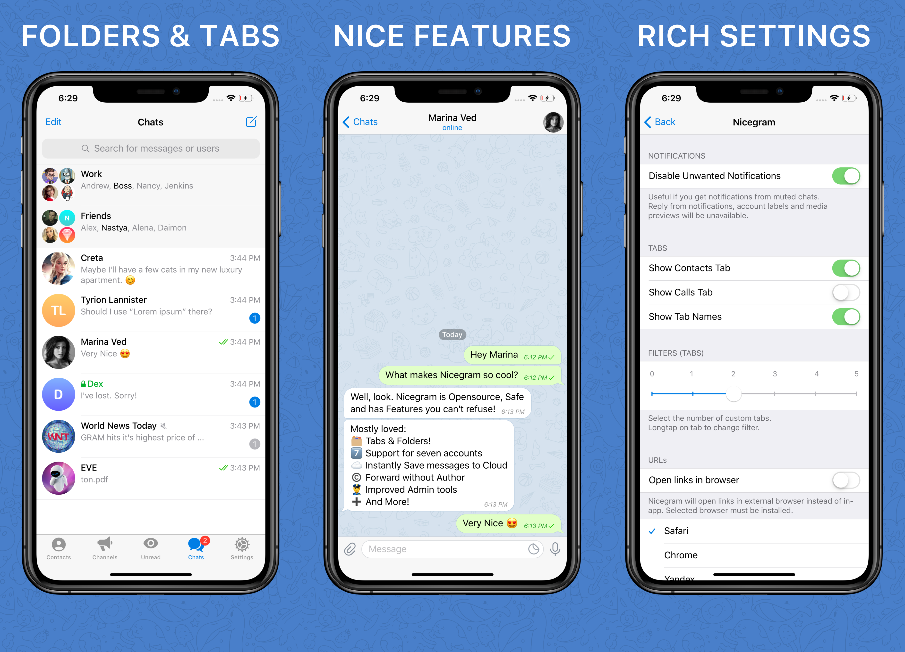

切了三年 Telegram 多账号，直到遇到 Nicegram 才不折腾
上班族同时维护工作号、私人号、加密号三个 Telegram 账号，官方客户端多账号切换时全局设置跟着跑，每次切换都要手动改一遍。偶然发现 Nicegram 后，每个账号独立的隐私和配置空间直接解决了三年来的痛点。
周一早上八点四十，我像往常一样从私人号切到 Telegram 的工作号。
然后我愣了两秒。自动翻译关了——昨晚跟朋友聊国内消息时为了省流量把翻译切到了"仅手动"，结果这个设置居然跟着跳到了工作号。再往下滑，通话标签也不见了——那是我私人号特地隐藏的，怕半夜接到骚扰电话。工作号里有五个海外客户等着回消息，翻译没开、通话标签也藏了，这一早上得花十分钟把设置一项项调回去。
这就是我用官方 Telegram 三年来的日常：三个账号来回切，每切一次都像在拆盲盒，不知道上一个账号改了什么全局设置会偷偷跟过来。
三个账号，三种完全不同的使用方式
我的三个 Telegram 账号各司其职。工作号是公司给的，标签体系是客户 / 项目 / 内部，文件夹分紧急 / 待处理 / 存档，自动翻译必须常开——客户里有三个是不会说中文的俄罗斯人和西班牙人，每天的沟通全靠翻译顶着。私人号是自己的，标签只有家人 / 朋友 / 兴趣，通话标签一直隐藏，翻译基本不开。加密号最特殊，是混 Web3 社区用的，关联了独立的钱包，还开了 Gem 空投提醒，甚至还设了 Double Bottom——通过 PIN 才能进入，怕被人翻手机时不小心看到。
官方 Telegram 的问题就在于：通知偏好、数据存储、自动翻译这些设置是全局的。你在私人号关了翻译，切到工作号也关了；你在加密号开了某个通知，工作号也跟着响。三年来我养成了一个习惯：每次切账号先扫一眼设置，把不对劲的地方手动改回去。
上周四加班到十点，切回私人号准备睡觉，结果发现工作号里开的自动下载视频也跟着开了——私人号刚加载了一个二十多兆的短视频，手机内存直接炸了。我跟同组的同事吐槽了这事，她头也不抬地说："你还在用官方的？ Nicegram 每个账号设置独立啊。"
装 Nicegram 的那天晚上
我在手机上搜了一下，找到了它的官网，下载安装包花了两分钟。打开之后先把三个账号都迁过来——迁移过程比想象中简单，就是一个个扫码登录，聊天记录和群聊自动同步。
然后开始给每个账号单独配东西。这是我用 Telegram 三年来第一次做这件事。
给工作号建了标签：客户、项目、内部；文件夹：紧急、待处理、存档；自动翻译目标语言设成了中英西三种，默认自动翻译；通知设成了只响客户和项目的群聊，内部群静默。
切到私人号——标签体系完全不一样：家人、朋友、兴趣；通话标签隐藏了；翻译关了；通知除了置顶的三个群都静默。
再切到加密号——这次我甚至没在对话列表里看到它。Nicegram 的 Double Bottom 功能是真的把账号藏起来了，只有输入 PIN 才能让它出现。进去之后，有独立的钱包，Gem 提醒开着，收藏的 NFT 频道和 DAO 投票群都在，跟另外两个账号完全隔离。
那天晚上我来回切了二十多次——从工作号切到私人号，翻译自动关了；从私人号切到加密号，PIN 验证后看到的是我收藏的 Web3 频道；再切回工作号，翻译好好地开着，标签和文件夹跟离开时一模一样。
三年来第一次，切账号不用改设置。

几个让我意外的小便利
配置完三个账号那天，我顺手翻了翻 Nicegram 的其他功能，发现了几个让我又省时间又省心的小设计。
保存消息变成了一键操作。 官方 Telegram 里，保存一条有用的消息要：长按 → 转发 → 找"保存的消息" → 点击。三步。上周客户发过来一个项目需求的链接，我按官方的流程走了一遍，觉得烦。Nicegram 长按消息的菜单里直接有"保存消息"选项，点一下就完事了。更爽的是，批量选择多条消息然后一起保存——我整理上周那个跨时区项目的讨论记录时，选中了二十多条关键消息，点一下全进了"保存的消息"。"保存的消息"本身也是每个账号独立的，工作号收藏的项目资料在私人号里看不到，不会串。
dApp 交互不用跳来跳去。 加密号里我加了几个 Web3 社区，官方 Telegram 里玩空投和 NFT 投票得跳到外部钱包或浏览器，Nicegram 内置了钱包和 Web3 浏览器能力。在 Telegram 机器人里点一下空投链接，Nicegram 钱包会弹出授权请求——明确告诉我是读余额还是发代币，确认后直接在应用里完成签名和交易。第一次交互新 dApp 时我只用小额试了一下，流程跑通之后就放心多了。安全提醒它也做得够意思：授权后可以随时取消，不会有什么"无限额授权"偷偷绑着你。
代理设置里没有广告。 我在家里和公司用的是不同的网络环境，需要切换代理节点。官方 Telegram 的代理设置页面会显示代理提供者的名字、广告横幅和推广链接，每次切节点都得扫一眼那些广告才能找到自己配的节点。Nicegram 可以把这些广告全隐藏，设置页面干干净净，只列你自己配的节点。不过有一点得说清楚：代理设置本身还是全局的——这是网络连接层的东西，Nicegram 也没法给每个账号配不同的代理。如果加密号需要走 VPN 而工作号直连，还是得在系统层面切，应用内解决不了，这个细节我后来去Nicegram文档查了一下才确认。

现在的日常
现在每天我还是切三个 Telegram 账号，但是再也不扫设置了。
早上八点四十切工作号，翻译自动开着，标签和文件夹整整齐齐，客户消息不会被打扰。中午吃饭切私人号，看不到工作号的任何影子，私人号的设置也不会把工作号的翻译关掉。偶尔想起来看看加密号，输个 PIN 进去，钱包和空投提醒都在，不会被前两个账号的通知冲掉。
其实官方 Telegram 的多账号切换不是完全不能用——只是它假设每个人只有一个账号，或者每个账号的使用场景差不多。像我这种一个号当三个号用的人，三年来一直在跟这个假设较劲。
Nicegram 解决的不是什么革命性的问题，就是把"每个账号应该有自己的设置"这件小事做对了。三年了，终于不用每次切账号都手动调十分钟设置。上面提到的这些设置技巧，也整理了一份完整版存在三个仓库里：GitHub是主仓库，国内访问慢的话看Gitee，还有一份放在GitCode做备份。